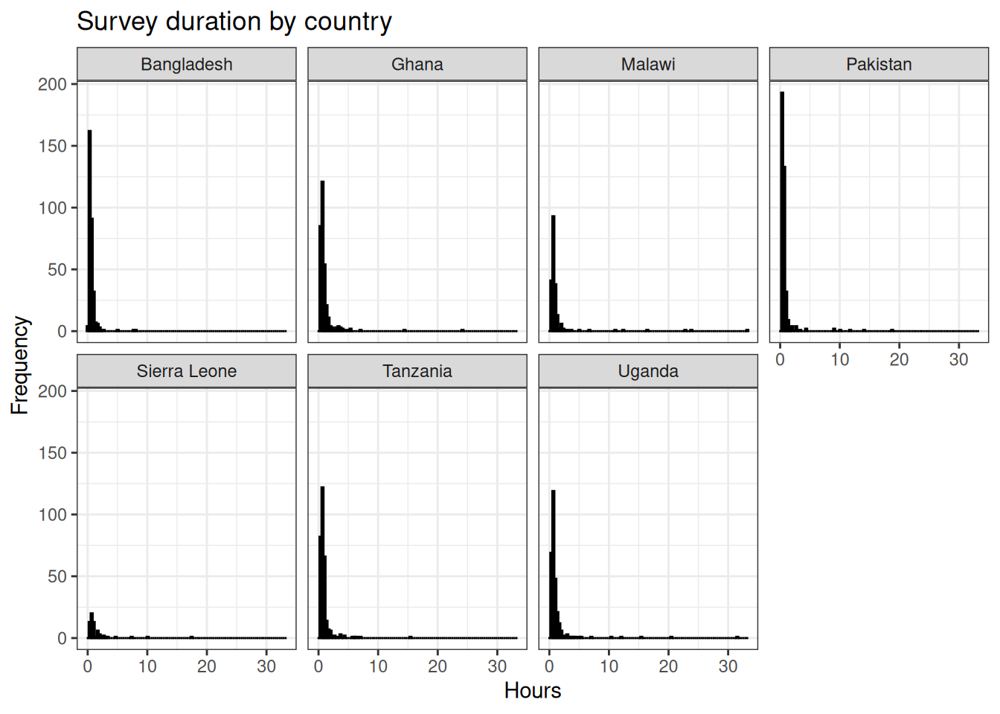
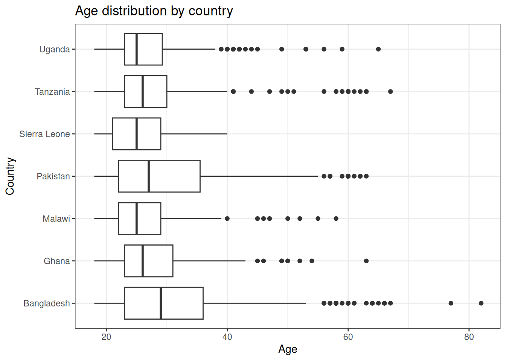
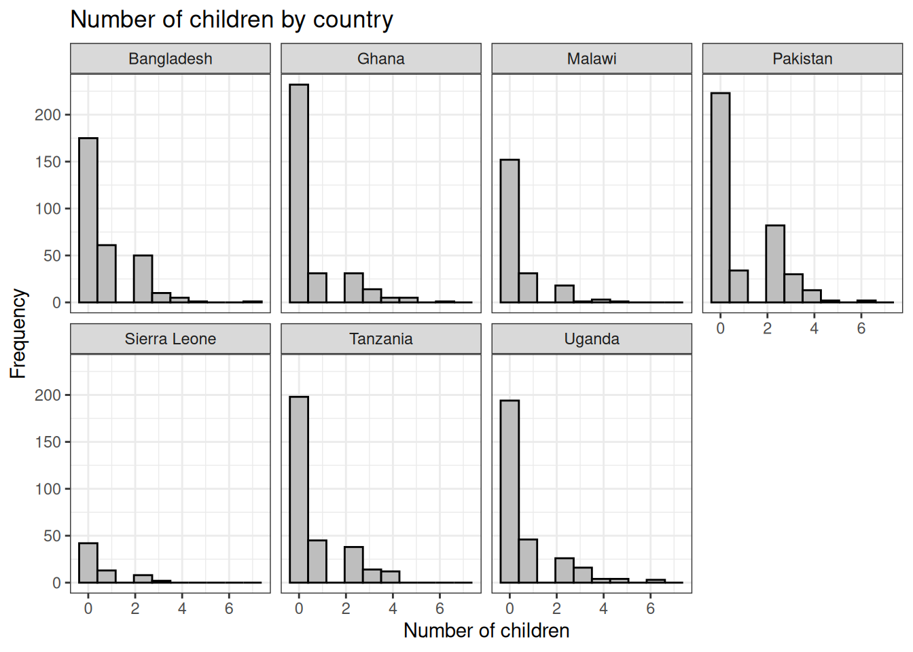
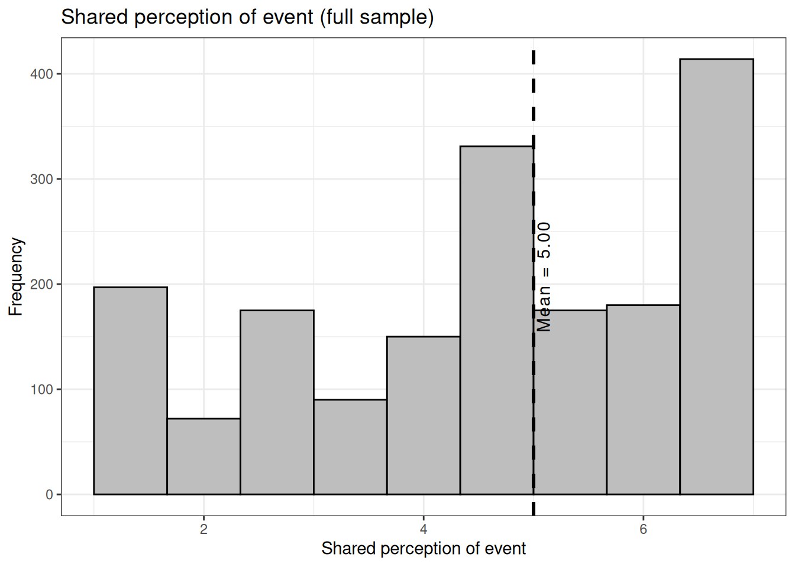
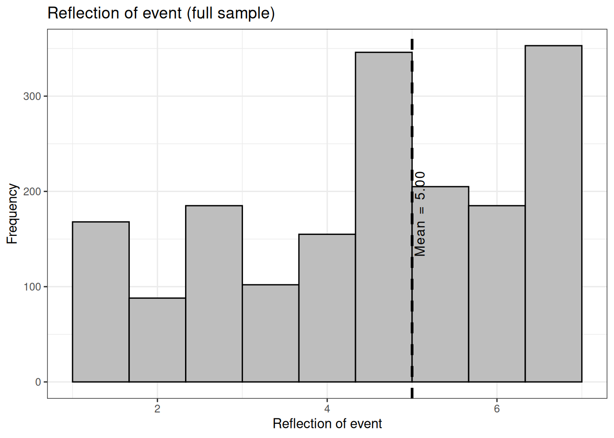
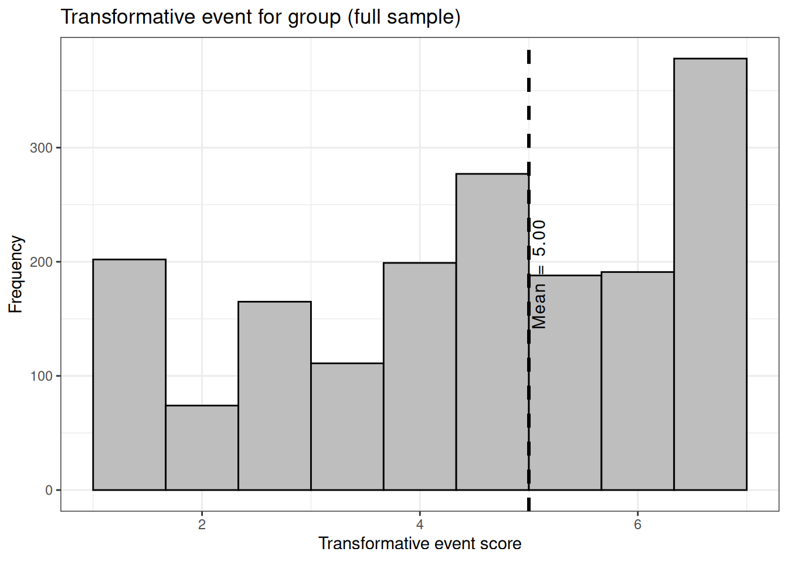
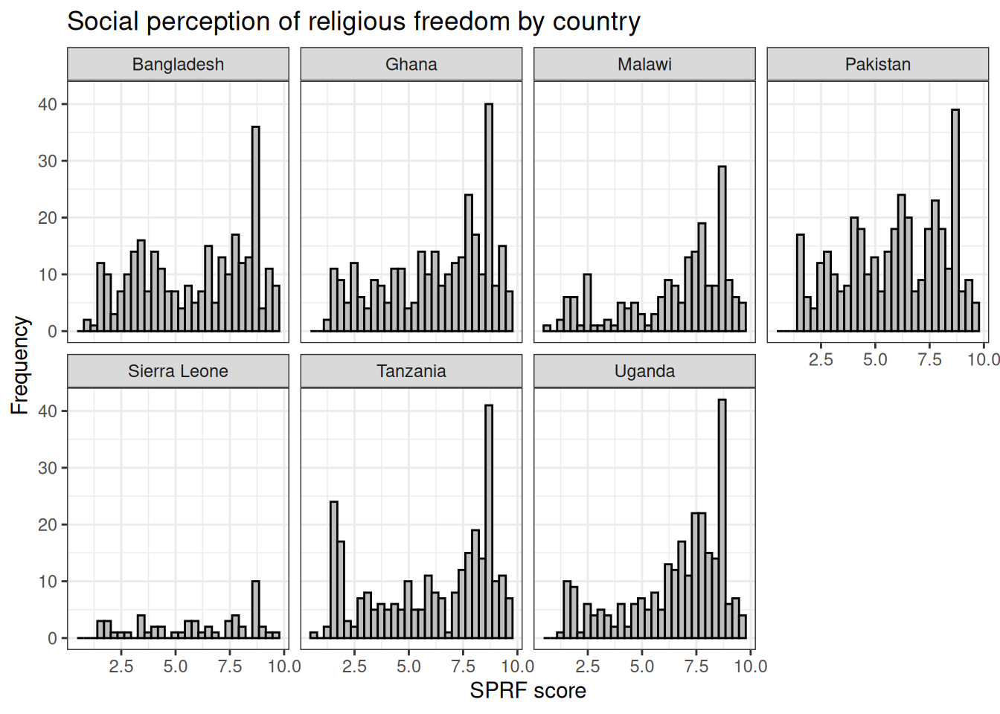

ds %>%# drop_na(Country)%>%ggplot(aes(x = hours))+geom_histogram(color ="black",fill ="gray",bins =100)+labs(x ="Hours", y ="Frequency", title ="Survey duration by country")+facet_wrap(vars(Country), nrow =2)+theme_bw()

Display code
ds %>%# drop_na(Country)%>%ggplot(aes(x = hours, y = Country, color = Country))+geom_point(show.legend =FALSE)+labs(x ="Hours",title ="Survey duration by country")+scale_color_colorblind()+theme_bw()
Variable: Age
Display code
ds$age <-as.numeric(ds$age)summary(ds$age)
Min. 1st Qu. Median Mean 3rd Qu. Max. NA's
18 23 26 29 32 82 2
Display code
ds %>%# drop_na(Country)%>%ggplot(aes(x = age, y = Country))+geom_boxplot(show.legend =FALSE)+labs(x ="Age",title ="Age distribution by country")+scale_color_colorblind()+theme_bw()

Display code
ds %>%# drop_na(Country)%>%ggplot(aes(x = age, y = Country, color = Country))+geom_point(show.legend =FALSE)+labs(x ="Age",title ="Age distribution by country")+scale_color_colorblind()+theme_bw()
## Gender distribution by countrybarp01 <- ds %>%drop_na(gender) %>%ggplot(aes(x = gender, fill = gender))+geom_bar()+labs(x ="",y ="Frequency",title ="Gender distribution by country", fill ="")+scale_fill_manual(values=c("green", "purple"))+facet_wrap(~Country, ncol =1)+coord_flip()+theme_bw()+theme(axis.text.y=element_blank(),axis.ticks.y=element_blank())barp01
Not available in this dataset. There is an “occupation” variable which needs additional work. See for example:
Display code
head(table(ds$occupation), n =15)
15
Am not working
1
Employee
1
I`m a primary school teacher
1
ছাত্র
1
2
1
A digital marketer
1
A hustler with a high school education, I do any work which comes to me as long it does not involve using of skills.
1
A MARKETER
1
A statistician and operational researcher
1
A student
1
A teacher
1
Account ant
1
Accountancy
1
Accountant
32
## Religion distribution by country:tbl04 <-table(ds$religion2, ds$Country)tbl05 <-addmargins(tbl04, c(1, 2))## Table of user language by country:tbl05
## Marital status by country:lp05 <- ds %>%drop_na(married) %>%group_by(married, Country) %>%summarise(count =n()) %>%ggplot(aes(married, count)) +geom_segment(aes(x=married, xend=married, y=0, yend=count))+geom_point()+labs(x ="", y ="Frequency", title ="Marital status by country")+facet_wrap(vars(Country), nrow =2)+coord_flip()+theme_bw()lp05
Min. 1st Qu. Median Mean 3rd Qu. Max. NA's
0.0 0.0 0.0 0.7 1.0 7.0 11
Display code
ds %>%drop_na(children)%>%ggplot(aes(x = children))+geom_bar(color ="black",fill ="gray",width =0.75)+geom_textvline(label ="Mean = 0.7", xintercept =0.7, vjust =1.3, lwd =1.05, linetype =2)+labs(x ="Number of children", y ="Frequency", title ="Number of children: Full sample")+theme_bw()
Display code
ds %>%drop_na(children)%>%ggplot(aes(x = children))+geom_histogram(color ="black",fill ="gray", bins =10)+labs(x ="Number of children", y ="Frequency", title ="Number of children by country")+facet_wrap(vars(Country), nrow =2)+# coord_flip()+theme_bw()

Variable: Ethnicity
This variable needs additional work. Each individual entry is a different character. See for example:
Display code
head(table(ds$ethnic), n =15)
27
Am black
1
Black
1
'Race' and 'ethnicity' have been used as ways to describe human diversity.
1
1-2 hours
1
2
2
3
3
4
2
60
1
90%
1
A black African, lhomwe
1
A black guy
1
A black man.
1
A Christian
1
A Fante/ Akan
1
Variable: Education
Display code
ds$edu1 <-as_factor(ds$Education)ds$edu2 <-ifelse(ds$edu1 =="No schooling completed", "No schooling",ifelse(ds$edu1 =="Nursery school to 8th grade", "8th grade or less",ifelse(ds$edu1 =="Some high school, no diploma", "Some high school",ifelse(ds$edu1 =="High school graduate, diploma or the equivalent (for example: GED)", "High school or equivalent",ifelse(ds$edu1 =="Some college credit, no degree", "Some college",ifelse(ds$edu1 =="Trade/technical/vocational training", "Vocational school",ifelse(ds$edu1 =="Associate degree", "Associate's",ifelse(ds$edu1 =="Bachelor’s degree", "Bachelor's",ifelse(ds$edu1 =="Master’s degree", "Master's",ifelse(ds$edu1 =="Professional degree", "Professional",ifelse(ds$edu1 =="Doctorate degree", "Doctorate", NA)))))))))))ds$edu2 <-factor(ds$edu2, levels =c("No schooling", "8th grade or less", "Some high school", "High school or equivalent","Some college", "Vocational school","Associate's", "Bachelor's", "Master's","Professional", "Doctorate"))# table(ds$edu2)## Education distribution (full sample):lp04 <- ds %>%drop_na(edu2) %>%group_by(edu2) %>%summarise(count =n()) %>%ggplot(aes(edu2, count)) +geom_segment(aes(x=edu2, xend=edu2, y=0, yend=count))+geom_point()+labs(x ="", y ="Frequency", title ="Education distribution (full sample)")+coord_flip()+theme_bw()lp04
Display code
## Education distribution by country:lp05 <- ds %>%drop_na(edu2) %>%group_by(edu2, Country) %>%summarise(count =n()) %>%ggplot(aes(edu2, count)) +geom_segment(aes(x=edu2, xend=edu2, y=0, yend=count))+geom_point()+labs(x ="", y ="Frequency", title ="Education distribution by country")+facet_wrap(vars(Country), nrow =2)+coord_flip()+theme_bw()lp05
Section 2. Factor Analysis: Group fusion/identification
Display code
## Four ingroup fusion items:# I have a deep emotional bond with the [ingroup].ds$IGF01 <-as.numeric(ds$Fus.IG1)# I am strong because of the [ingroup].ds$IGF02 <-as.numeric(ds$Fus.IG2)# I make the [ingroup] strong. ds$IGF03 <-as.numeric(ds$Fus.IG3)# I am one with the [ingroup]ds$IGF04 <-as.numeric(ds$Fus.IG4)## Four outgroup fusion items:# I have a deep emotional bond with the [outgroup].ds$OGF01 <-as.numeric(ds$FUS.OG1)# I am strong because of the [outgroup].ds$OGF02 <-as.numeric(ds$FUS.OG2)# I make the [outgroup] strong. ds$OGF03 <-as.numeric(ds$FUS.OG3)# I am one with the [outgroup].ds$OGF04 <-as.numeric(ds$FUS.OG4)## Four ingroup identification items:# I identify with the [ingroup].ds$IGI01 <-as.numeric(ds$IDT.IG1)# I have a lot in common with the [ingroup].ds$IGI02 <-as.numeric(ds$IDT.IG2)# I connect with the values of the [ingroup].ds$IGI03 <-as.numeric(ds$IDT.IG3)# I feel a sense of belonging with the [ingroup].ds$IGI04 <-as.numeric(ds$IDT.IG4)## Four outgroup identification items:# I identify with the [outgroup]. ds$OGI01 <-as.numeric(ds$IDNT.OG1)# I have a lot in common with the [outgroup]. ds$OGI02 <-as.numeric(ds$IDNT.OG2)# I connect with the values of the [outgroup]. ds$OGI03 <-as.numeric(ds$IDNT.OG3)# I feel a sense of belonging with the [outgroup]. ds$OGI04 <-as.numeric(ds$IDNT.OG4)
Shorthand for item names: IG = Ingroup, OG = Outgroup F = Fusion, I = Identification So for example: IGF01 = “ingroup fusion: item 1” OGI04 = “outgroup identification: item 4”, and so on
The correlation plot above shows the correlation coefficients between the sixteen different items (eight for ingroup fusion/identification and eight for outgroup fusion/identification).
The general criteria is that KMO needs to be greater than 0.60. Based on the results (overall MSA = 0.96), factor analysis is appropriate.
Bartlett’s test of sphericity
Display code
cortest.bartlett(bonds)
$chisq
[1] 21035
$p.value
[1] 0
$df
[1] 120
The test is significant, again suggesting that factor analysis is appropriate.
Parallel test
Display code
# # parallel <- fa.parallel(bonds)
Based on the scree plot, factor analysis with two factors is the most appropriate. We will proceed with promax rotation, which assumes that the items are inter-correlated (that is, not independent from each other).
Factor analysis: Two factor model with promax rotation
Call:
factanal(x = bonds, factors = 2, rotation = "promax")
Uniquenesses:
IGF01 IGF02 IGF03 IGF04 IGI01 IGI02 IGI03 IGI04 OGF01 OGF02 OGF03 OGF04 OGI01
0.20 0.23 0.37 0.30 0.19 0.19 0.14 0.14 0.26 0.39 0.23 0.21 0.24
OGI02 OGI03 OGI04
0.24 0.26 0.21
Loadings:
Factor1 Factor2
IGF01 0.895
IGF02 0.878
IGF03 0.796 0.124
IGF04 0.837
IGI01 0.895
IGI02 0.901
IGI03 0.920
IGI04 0.924
OGF01 0.862
OGF02 0.785
OGF03 0.872
OGF04 0.880
OGI01 0.869
OGI02 0.874
OGI03 0.862
OGI04 0.887
Factor1 Factor2
SS loadings 6.24 5.97
Proportion Var 0.39 0.37
Cumulative Var 0.39 0.76
Factor Correlations:
Factor1 Factor2
Factor1 1.0000 -0.0801
Factor2 -0.0801 1.0000
Test of the hypothesis that 2 factors are sufficient.
The chi square statistic is 186 on 89 degrees of freedom.
The p-value is 0.0000000083
We want to split the ingroup/outgroup fusion/identification items into distinct factors. We can examine what the three and four factor solutions looks like.
Section 3. Factor Analysis: Group fusion/identification (Version 2)
The fourth item has been removed from each sub-scale:
Display code
## Remove 4th item from all subscales and retry:## New dataframe:bonds <-cbind.data.frame(ds$IGF01, ds$IGF02, ds$IGF03, ds$IGI01, ds$IGI02, ds$IGI03, ds$OGF01, ds$OGF02, ds$OGF03, ds$OGI01, ds$OGI02, ds$OGI03)names(bonds) <-sub('ds\\$', '', names(bonds))bonds <-na.omit(bonds)mtx1 <-cor(bonds[, c(1:12)])corrplot(mtx1, method ="number", number.cex =0.7,col=c("white", "darkred", "red","darkgrey", "blue", "darkblue"))
Display code
# # parallel <- fa.parallel(bonds)
Two factor model:
Display code
# Two factor modelfit04 <-factanal(bonds, 2, rotation="promax")fit04
Call:
factanal(x = bonds, factors = 2, rotation = "promax")
Uniquenesses:
IGF01 IGF02 IGF03 IGI01 IGI02 IGI03 OGF01 OGF02 OGF03 OGI01 OGI02 OGI03
0.20 0.23 0.37 0.20 0.18 0.14 0.26 0.38 0.24 0.26 0.23 0.25
Loadings:
Factor1 Factor2
IGF01 0.896
IGF02 0.878
IGF03 0.791 0.122
IGI01 0.894
IGI02 0.902
IGI03 0.921
OGF01 0.862
OGF02 0.787
OGF03 0.865
OGI01 0.860
OGI02 0.877
OGI03 0.865
Factor1 Factor2
SS loadings 4.67 4.39
Proportion Var 0.39 0.37
Cumulative Var 0.39 0.76
Factor Correlations:
Factor1 Factor2
Factor1 1.0000 0.0562
Factor2 0.0562 1.0000
Test of the hypothesis that 2 factors are sufficient.
The chi square statistic is 98 on 43 degrees of freedom.
The p-value is 0.000004
Three factor model
Display code
# Three factor model:fit05 <-factanal(bonds, 3, rotation="promax")fit05
Call:
factanal(x = bonds, factors = 3, rotation = "promax")
Uniquenesses:
IGF01 IGF02 IGF03 IGI01 IGI02 IGI03 OGF01 OGF02 OGF03 OGI01 OGI02 OGI03
0.20 0.23 0.33 0.20 0.18 0.14 0.25 0.38 0.20 0.26 0.22 0.24
Loadings:
Factor1 Factor2 Factor3
IGF01 0.899
IGF02 0.872
IGF03 0.734 0.230
IGI01 0.884
IGI02 0.917
IGI03 0.915
OGF01 0.869
OGF02 0.765
OGF03 -0.120 0.809 0.214
OGI01 0.835
OGI02 0.889
OGI03 0.894
Factor1 Factor2 Factor3
SS loadings 4.59 4.29 0.12
Proportion Var 0.38 0.36 0.01
Cumulative Var 0.38 0.74 0.75
Factor Correlations:
Factor1 Factor2 Factor3
Factor1 1.0000 0.0818 -0.230
Factor2 0.0818 1.0000 0.236
Factor3 -0.2304 0.2363 1.000
Test of the hypothesis that 3 factors are sufficient.
The chi square statistic is 53 on 33 degrees of freedom.
The p-value is 0.013
Four factor model
Display code
# Four factor model:fit06 <-factanal(bonds, 4, rotation="promax")fit06
Call:
factanal(x = bonds, factors = 4, rotation = "promax")
Uniquenesses:
IGF01 IGF02 IGF03 IGI01 IGI02 IGI03 OGF01 OGF02 OGF03 OGI01 OGI02 OGI03
0.20 0.22 0.35 0.20 0.18 0.14 0.25 0.35 0.12 0.26 0.20 0.24
Loadings:
Factor1 Factor2 Factor3 Factor4
IGF01 0.902
IGF02 0.858
IGF03 0.774 0.111
IGI01 0.896
IGI02 0.911
IGI03 0.937
OGF01 0.842
OGF02 0.667 0.224
OGF03 0.909 0.367
OGI01 0.814
OGI02 0.992 -0.194
OGI03 0.915
Factor1 Factor2 Factor3 Factor4
SS loadings 4.68 4.47 0.157 0.12
Proportion Var 0.39 0.37 0.013 0.01
Cumulative Var 0.39 0.76 0.776 0.79
Factor Correlations:
Factor1 Factor2 Factor3 Factor4
Factor1 1.00000 -0.0599 -0.00647 0.243
Factor2 -0.05990 1.0000 0.08120 0.533
Factor3 -0.00647 0.0812 1.00000 -0.171
Factor4 0.24262 0.5327 -0.17078 1.000
Test of the hypothesis that 4 factors are sufficient.
The chi square statistic is 30 on 24 degrees of freedom.
The p-value is 0.17
FA basically suggests that ingroup / outgroup fusion/identification are not distinct factors. Only real split is between ingroup (identification + fusion) as one factor and outgroup (identification + fusion) as another factor. However, I’ll replicate the analysis as before - two constructs for ingroup fusion / identification and a single “bonds” construct for outgroup fusion+identification. Here is the reliability and inter-correlations of the three sub-scales:
## BCL and BBL items:# BCL_01:# Seek out opportunities to bridge social divisions with their opponents, enemies, opposition groups, or other outgroups. # Variables: endorse_style_1 and exp_style_1# BCL_02:# Demonstrate willingness to compromise with their opponents, enemies, opposition groups, or other outgroups. # Variables: endorse_style_2 and exp_style_2# BCL_03:# Try to understand and empathize with their opponents, enemies, opposition groups, or other outgroups. # Variables: endorse_style_3 and exp_style_3# BBL_01:# Represent the interests of the communities and groups that they belong to even at the cost of other groups.# Variables: endorse_style_4 and exp_style_4# BBL_02:## OLD QUESTION (individual datasets):# Focus on building stronger connections within the communities and groups they belong to rather than building stronger relationships with other groups across boundaries.## NEW QUESTION (this dataset):# Seek out opportunities to build stronger connections with the communities and groups they belong to.## Are the above same?? I'm assuming they are the same item. # Variables: endorse_style_5 and exp_style_5# BBL_03:# Try to gain benefits for the communities and groups they belong to even at the expense of other groups.# Variables: endorse_style_6 and exp_style_6ds$ENDBCL01 <-as.numeric(ds$endorse_style_1)ds$ENDBCL02 <-as.numeric(ds$endorse_style_2)ds$ENDBCL03 <-as.numeric(ds$endorse_style_3)ds$ENDBBL01 <-as.numeric(ds$endorse_style_4)ds$ENDBBL02 <-as.numeric(ds$endorse_style_5)ds$ENDBBL03 <-as.numeric(ds$endorse_style_6)ds$EXPBCL01 <-as.numeric(ds$exp_style_1)ds$EXPBCL02 <-as.numeric(ds$exp_style_2)ds$EXPBCL03 <-as.numeric(ds$exp_style_3)ds$EXPBBL01 <-as.numeric(ds$exp_style_4)ds$EXPBBL02 <-as.numeric(ds$exp_style_5)ds$EXPBBL03 <-as.numeric(ds$exp_style_6)leadership <-cbind.data.frame(ds$ENDBCL01, ds$ENDBCL02, ds$ENDBCL03, ds$ENDBBL01, ds$ENDBBL02, ds$ENDBBL03, ds$EXPBCL01, ds$EXPBCL02, ds$EXPBCL03, ds$EXPBBL01, ds$EXPBBL02, ds$EXPBBL03)names(leadership) <-sub('ds\\$', '', names(leadership))leadership <-na.omit(leadership)mtx1 <-cor(leadership[, c(1:12)])
Shorthand for item names: END = Endorse, EXP = Experience BCL = BCL, BBL = BBL So for example: ENDBCL01 = “Endorsement of BCL, item 1” EXPBBL02 = “Experience of BBL, item 2”, and so on
The correlation plot above shows the correlation coefficients between the twelve different items (six for endorsement of BCL/BBL, and six for experience of BCL/BBL).
KMO and Bartlett’s test:
Display code
## Kaiser-Meyer-Olkin (KMO) test of factorabilityKMO(r=cor(leadership))
Again, FA structure does not really support a four factor Endorse/Experience BCL/BBL structure. I will still split the sub-scales into those four constructs.
Min. 1st Qu. Median Mean 3rd Qu. Max. NA's
18 23 26 29 32 82 2
Display code
## Four regression models predicting endorsement and experience of BCL / BBL:lm01 <-lm(Endorse_BCL~IG_Fusion+IG_Identification+OG_Bonds+Age+Female+Married+Wealth_level,data = ds)lm02 <-lm(Experience_BCL~IG_Fusion+IG_Identification+OG_Bonds+Age+Female+Married+Wealth_level, data = ds)lm03 <-lm(Endorse_BBL~IG_Fusion+IG_Identification+OG_Bonds+Age+Female+Married+Wealth_level, data = ds)lm04 <-lm(Experience_BBL~IG_Fusion+IG_Identification+OG_Bonds+Age+Female+Married+Wealth_level, data = ds)
This set of regression models have additional predictor variables compared to the last set. It adds empathic concern and perspective taking as additional predictors.
Display code
## Four regression models predicting endorsement and experience of BCL / BBL:lm01 <-lm(Endorse_BCL~IG_Fusion+IG_Identification+OG_Bonds+empathic_concern+perspective_taking+Age+Female+Married+Wealth_level,data = ds)lm02 <-lm(Experience_BCL~IG_Fusion+IG_Identification+OG_Bonds+empathic_concern+perspective_taking+Age+Female+Married+Wealth_level, data = ds)lm03 <-lm(Endorse_BBL~IG_Fusion+IG_Identification+OG_Bonds+empathic_concern+perspective_taking+Age+Female+Married+Wealth_level, data = ds)lm04 <-lm(Experience_BBL~IG_Fusion+IG_Identification+OG_Bonds+empathic_concern+perspective_taking+Age+Female+Married+Wealth_level, data = ds)
Section 9. Alternative regression models with different outcomes
This set of regression models have different outcome variables which are: outgroup cooperation, outgroup hostility, and willingness to fight outgroup. None of these DVs are available for this dataset.
Min. 1st Qu. Median Mean 3rd Qu. Max. NA's
1 4 7 6 8 10 144
Display code
ds %>%drop_na(sprf)%>%ggplot(aes(x = sprf))+geom_histogram(color ="black",fill ="gray",bins =30)+geom_textvline(label ="Mean = 6.00", xintercept =6.00, vjust =1.1, lwd =1.05, linetype =2)+labs(x ="SPRF score", y ="Frequency", title ="Social perception of religious freedom (full sample)")+theme_bw()
Display code
ds %>%drop_na(sprf)%>%ggplot(aes(x = sprf))+geom_histogram(color ="black",fill ="gray",bins =30)+labs(x ="SPRF score", y ="Frequency", title ="Social perception of religious freedom by country")+facet_wrap(vars(Country), nrow =2)+theme_bw()
Min. 1st Qu. Median Mean 3rd Qu. Max. NA's
4 5 6 6 7 8 635
Display code
ds %>%drop_na(exp_religious_freedom)%>%ggplot(aes(x = exp_religious_freedom))+geom_histogram(color ="black",fill ="gray",bins =30)+geom_textvline(label ="Mean = 6.00", xintercept =6.00, vjust =1.1, lwd =1.05, linetype =2)+labs(x ="Experience of religious freedom score", y ="Frequency", title ="Experience of religious freedom (full sample)")+theme_bw()
Display code
ds %>%drop_na(exp_religious_freedom)%>%ggplot(aes(x = exp_religious_freedom))+geom_histogram(color ="black",fill ="gray",bins =30)+labs(x ="Experience of religious freedom score", y ="Frequency", title ="Experience of religious freedom by country")+facet_wrap(vars(Country), nrow =2)+theme_bw()
Experience of religious freedom based on religious affiliation
Religion Exp_religious_freedom
1 Agnostic 5.5
2 Atheist 4.7
3 Christian: Catholic 5.9
4 Christian: Other 6.0
5 Christian: Protestant 6.1
6 Hindu 5.7
7 Jewish 6.3
8 Muslim: Shia 5.7
9 Muslim: Sunni 5.8
10 None 6.4
11 Other 5.7
12 Spiritual not Religious 5.8
Display code
ds %>%drop_na(religion, exp_religious_freedom)%>%ggplot(aes(y = exp_religious_freedom, x = Religion))+geom_boxplot()+labs(x ="", y ="Experience of religious freedom score", title ="Experience of religious freedom (full sample)")+coord_flip()+theme_bw()
Display code
ds %>%drop_na(religion, exp_religious_freedom)%>%ggplot(aes(y = exp_religious_freedom, x = Religion))+geom_boxplot()+labs(x ="", y ="Experience of religious freedom score", title ="Experience of religious freedom by country and religion")+coord_flip()+facet_wrap(vars(Country), nrow =2)+theme_bw()
Section 11. Positive/Negative contact with outgroup
Not available for this dataset
Section 12. Inter-group marriage
Not available for this dataset
Section 13. Outgroup affect
Not available for this dataset
Section 14. Updated regression models
This set of regression models have additional predictors: frequency of positive and negative contact, and interaction between perspective taking and perceived history of discrimination. None of these variables were available for this dataset.
Same predictors as section 14 above, but with different outcomes. This set of regression models has an additional outcome variable: affect towards outgroup. None of these variables were available for this dataset.
Some items ( ds$event_negative_affect ) were negatively correlated with the total scale and
probably should be reversed.
To do this, run the function again with the 'check.keys=TRUE' option
ds %>%drop_na(imagistic)%>%ggplot(aes(x = imagistic))+geom_histogram(color ="black",fill ="gray",bins =50)+labs(x ="Imagistic experience score", y ="Frequency", title ="Imagistic experience by country")+facet_wrap(vars(Country), nrow =2)+theme_bw()
Section 17. Imagistic experience: sub-scales
Below are the individual Cronbach’s alpha for each of the seven subscales, followed by their individual visualizations, followed by the correlation between the seven sub-scales
Min. 1st Qu. Median Mean 3rd Qu. Max. NA's
1 1 3 4 6 7 93
Display code
ds %>%drop_na(event_negative_affect)%>%ggplot(aes(x = event_negative_affect))+geom_histogram(color ="black",fill ="gray",bins =10)+geom_textvline(label ="Mean = 4.00", xintercept =4.00, vjust =1.1, lwd =1.05, linetype =2)+labs(x ="Negative affect about event", y ="Frequency", title ="Negative affect about event (full sample)")+theme_bw()
Display code
ds %>%drop_na(event_negative_affect)%>%ggplot(aes(x = event_negative_affect))+geom_histogram(color ="black",fill ="gray",bins =10)+labs(x ="Negative affect about event", y ="Frequency", title ="Negative affect about event by country")+facet_wrap(vars(Country), nrow =2)+theme_bw()
Min. 1st Qu. Median Mean 3rd Qu. Max. NA's
1 2 5 5 7 7 85
Display code
ds %>%drop_na(event_positive_affect)%>%ggplot(aes(x = event_positive_affect))+geom_histogram(color ="black",fill ="gray",bins =10)+geom_textvline(label ="Mean = 5.00", xintercept =5.00, vjust =1.1, lwd =1.05, linetype =2)+labs(x ="Positive affect about event", y ="Frequency", title ="Positive affect about event: Gambia")+theme_bw()
Display code
ds %>%drop_na(event_positive_affect)%>%ggplot(aes(x = event_positive_affect))+geom_histogram(color ="black",fill ="gray",bins =10)+labs(x ="Positive affect about event", y ="Frequency", title ="Positive affect about event by country")+facet_wrap(vars(Country), nrow =2)+theme_bw()
Min. 1st Qu. Median Mean 3rd Qu. Max. NA's
1 4 5 5 6 7 111
Display code
ds %>%drop_na(event_episodic_recall)%>%ggplot(aes(x = event_episodic_recall))+geom_histogram(color ="black",fill ="gray",bins =10)+geom_textvline(label ="Mean = 5.00", xintercept =5.00, vjust =1.1, lwd =1.05, linetype =2)+labs(x ="Episodic recall of event", y ="Frequency", title ="Episodic recall of event (full sample)")+theme_bw()
Display code
ds %>%drop_na(event_episodic_recall)%>%ggplot(aes(x = event_episodic_recall))+geom_histogram(color ="black",fill ="gray",bins =10)+labs(x ="Episodic recall of event", y ="Frequency", title ="Episodic recall of event by country")+facet_wrap(vars(Country), nrow =2)+theme_bw()
Min. 1st Qu. Median Mean 3rd Qu. Max. NA's
1 4 5 5 6 7 106
Display code
ds %>%drop_na(event_shared_perception)%>%ggplot(aes(x = event_shared_perception))+geom_histogram(color ="black",fill ="gray",bins =10)+geom_textvline(label ="Mean = 5.00", xintercept =5.00, vjust =1.1, lwd =1.05, linetype =2)+labs(x ="Shared perception of event", y ="Frequency", title ="Shared perception of event (full sample)")+theme_bw()

Display code
ds %>%drop_na(event_shared_perception)%>%ggplot(aes(x = event_shared_perception))+geom_histogram(color ="black",fill ="gray",bins =10)+labs(x ="Shared perception of event", y ="Frequency", title ="Shared perception of event by country")+facet_wrap(vars(Country), nrow =2)+theme_bw()
Min. 1st Qu. Median Mean 3rd Qu. Max. NA's
1 4 5 5 6 7 103
Display code
ds %>%drop_na(event_event_reflection)%>%ggplot(aes(x = event_event_reflection))+geom_histogram(color ="black",fill ="gray",bins =10)+geom_textvline(label ="Mean = 5.00", xintercept =5.00, vjust =1.1, lwd =1.05, linetype =2)+labs(x ="Reflection of event", y ="Frequency", title ="Reflection of event (full sample)")+theme_bw()

Display code
ds %>%drop_na(event_event_reflection)%>%ggplot(aes(x = event_event_reflection))+geom_histogram(color ="black",fill ="gray",bins =10)+labs(x ="Reflection of event", y ="Frequency", title ="Reflection of event by country")+facet_wrap(vars(Country), nrow =2)+theme_bw()
Min. 1st Qu. Median Mean 3rd Qu. Max. NA's
1 4 5 5 6 7 105
Display code
ds %>%drop_na(event_transformative_group)%>%ggplot(aes(x = event_transformative_group))+geom_histogram(color ="black",fill ="gray",bins =10)+geom_textvline(label ="Mean = 5.00", xintercept =5.00, vjust =1.1, lwd =1.05, linetype =2)+labs(x ="Transformative event score", y ="Frequency", title ="Transformative event for group (full sample)")+theme_bw()

Display code
ds %>%drop_na(event_transformative_group)%>%ggplot(aes(x = event_transformative_group))+geom_histogram(color ="black",fill ="gray",bins =10)+labs(x ="Transformative event score", y ="Frequency", title ="Transformative event for group by country")+facet_wrap(vars(Country), nrow =2)+theme_bw()

Social perception of religious freedom
Display code
Display code
Display code
